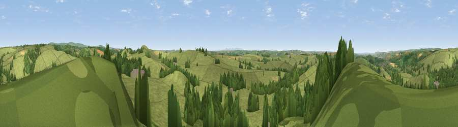

Viewpoint near Swimbridge
#12111 in England · top 23% of its area beats it · near SwimbridgeWhere it is
The exact computed spot (SS 62375 29525). Click the marker for map links.
The view, rendered

A 360° render of this exact spot computed from the terrain model, tree cover and land cover — summer colours, afternoon light, calibrated against photographs of famous viewpoints. Real trees, hedges and buildings will differ in detail.
The panorama
Grey silhouette: terrain skyline in each direction (720 bearings, Earth curvature and refraction included). Dashed green: skyline with trees (+15 m) and buildings (+8 m) as obstacles. Blue strip: how far the ground is visible on each bearing.
Where the view opens
Wedge length = distance to the farthest visible ground on that bearing (vegetation-aware). Rings at 10, 25 and 50 km.
What fills the view
66% grassland · 31% woodland · 2% cropland ·
Angular shares of the visible panorama (visual magnitude), not map area. Landscape diversity 0.33 (0–1 Shannon).
Key numbers
More beautiful places nearby
The staircase of upgrades: each row has a higher view potential than everything closer. Driving times are estimates from straight-line distance, calibrated against real road routing — check an actual route before setting out.
| Place | Direction | Drive | Score |
|---|---|---|---|
| Yollacombe Hill | ESE · 2 km | ~4 min | 70.2 |
| Viewpoint near Landkey | W · 3 km | ~7 min | 74.0 |
| Codden Hill | W · 4 km | ~9 min | 81.3 |
| Holdstone Hill | N · 18 km | ~31 min | 90.2 |
| The Knoll | ESE · 100 km | ~125 min | 91.0 |
51.04854, -3.96477 · source: screening · position refined by local search. Computed location — check access rights before visiting.